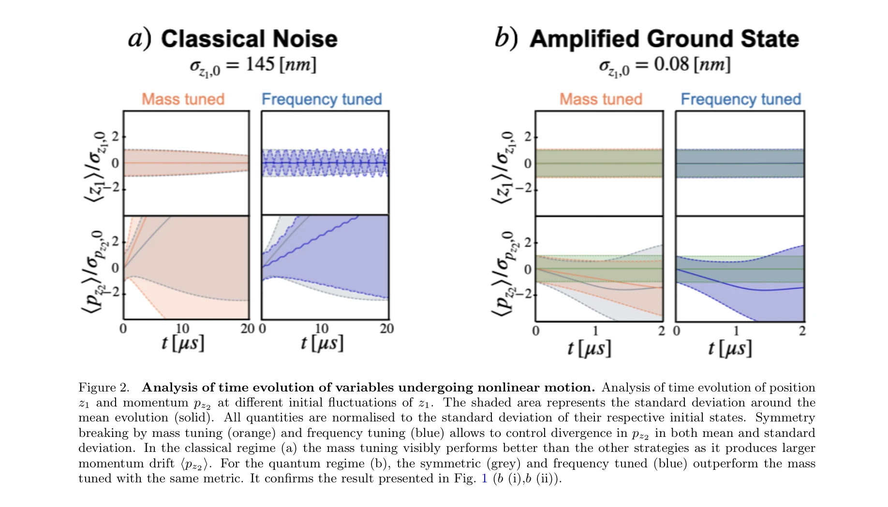

Essence

Figure 1.
Coulomb 상호작용의 고조파 부분을 보정하여 남은 비선형 상호작용이 한 입자의 위치 잡음에 의해 다른 입자의 운동량을 일관성 있게 변위시키는 현상을 고전 및 양자 영역에서 관찰한다.
저자: | 날짜: | URL: https://rihat99.github.io/climb_force/
Figure 1.
Coulomb 상호작용의 고조파 부분을 보정하여 남은 비선형 상호작용이 한 입자의 위치 잡음에 의해 다른 입자의 운동량을 일관성 있게 변위시키는 현상을 고전 및 양자 영역에서 관찰한다.

Figure 2.
Figure 1.
총평: 이 논문은 기본 물리력(Coulomb force)의 비선형 부분을 체계적으로 분리·강조하여 noise-driven coherent displacement라는 새로운 현상을 이론적으로 제시하며, 고전에서 양자 영역까지 보편적으로 관찰 가능함을 보인 의미 있는 기초 이론 연구이다.